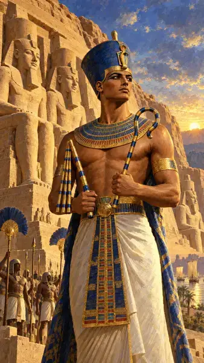
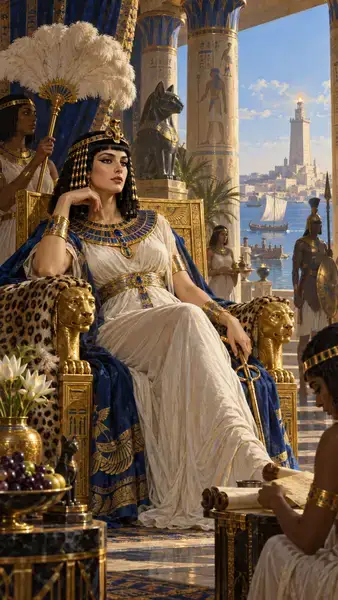

حكام مصر عبر العصور الخالدة
موقع تعليمي مستقل يعرض نبذات مختصرة عن شخصيات من تاريخ مصر، مع صور تخيلية مولدة بالذكاء الاصطناعي وروابط لمصادر مختارة.

طور القصة: الملحمة التاريخية الكاملة
رحلة سينمائية مرتبة زمنياً تنطلق من الملك مينا (نارمر) موحد القطرين، عبوراً بملوك البناء والفتوحات وسلاطين العصور الوسطى، وصولاً إلى الجمهورية الحديثة والرئيس عبد الفتاح السيسي؛ مدعومة بخرائط تفاعلية ووثائقيات بصرية مبهرة.

تصفح بحرية: بهو الحكام الشامل
استكشف 25 شخصية مختارة من تاريخ مصر. ابحث بالاسم أو صفّ حسب العصر، وراجع المصادر المختارة لمعرفة المزيد.

من أنا: وثيقة ورسالة المشروع التعليمي
موقع تعليمي مستقل يعرض معلومات موجزة عن شخصيات من تاريخ مصر. راجع المصادر المذكورة؛ المحتوى قد يكون غير مكتمل، ولا يمثل جهة حكومية أو متحفاً.
حُفظت هذه الملفات لتبقى شاهداً على حضارة لم تندثر، وعطاء إنساني امتد عبر آلاف السنين.